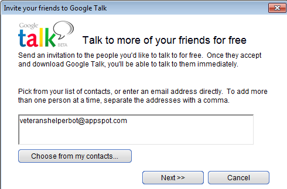
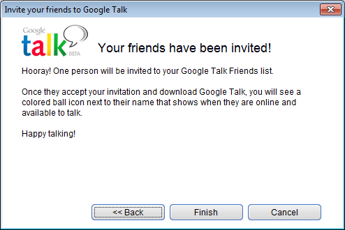
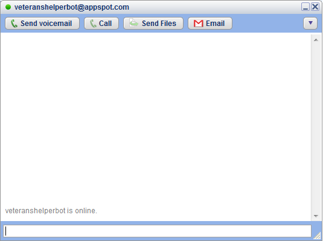
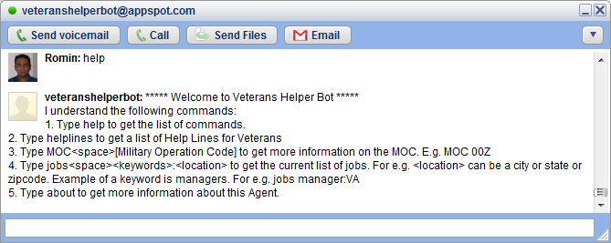
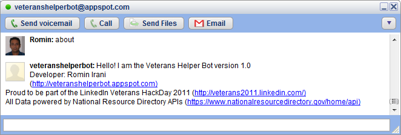
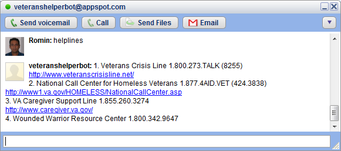
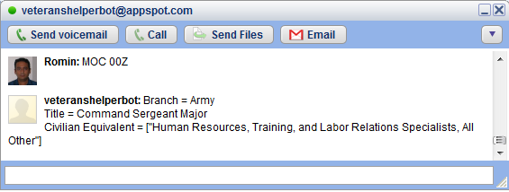
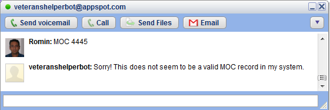
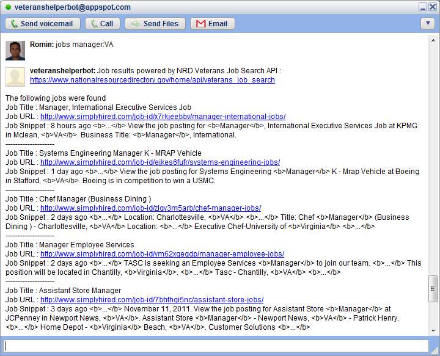

2 Minute Usage Guide
Step by Step Guide:
Step 1 :Launch Google Talk, Sign In and click on the "Add" button shown below:

Step 2 :Add veteranshelperbot@appspot.com as a contact and complete the steps.

Step 3 :This will add the Veterans Helper Bot to your friend list. Click on it and you should see that the Veterans Helper Bot is available as shown below.

Step 4 :Veterans Helper Bot understands only a few commands. To get a list of commands that it understands, simply type help as shown below. It will display a list of commands that it will obediently follow.

Step 5 :To know more about the Bot, simply type about as shown below. It will display a little something about it.

Step 6 :To get a list of Veterans Help Lines, type helplines as shown below. The Bot will provide you with phone numbers and websites for the Help Lines.

Step 7 : To get information on any Military Operation Code, type the following command MOC [code]. For e.g. MOC 00Z as shown below:

If you give a wrong MOC, it will display the message as shown below:

Step 8 : You can check Job postings by giving the following command jobs query:location For e.g. jobs manager:VA
The Bot will retrieve the jobs in and around the location you give. The data is sources from the NRD Job Search API.

Hope you like the service. Thank You for using Veterans Helper Bot.